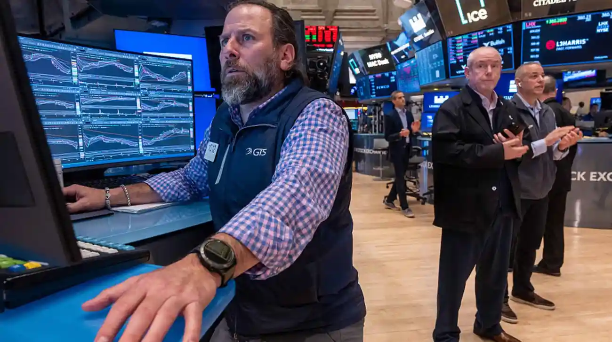
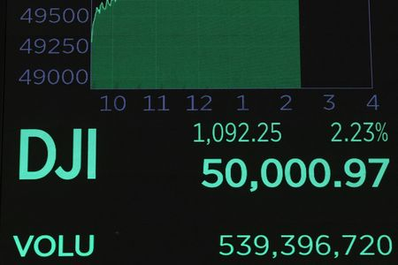
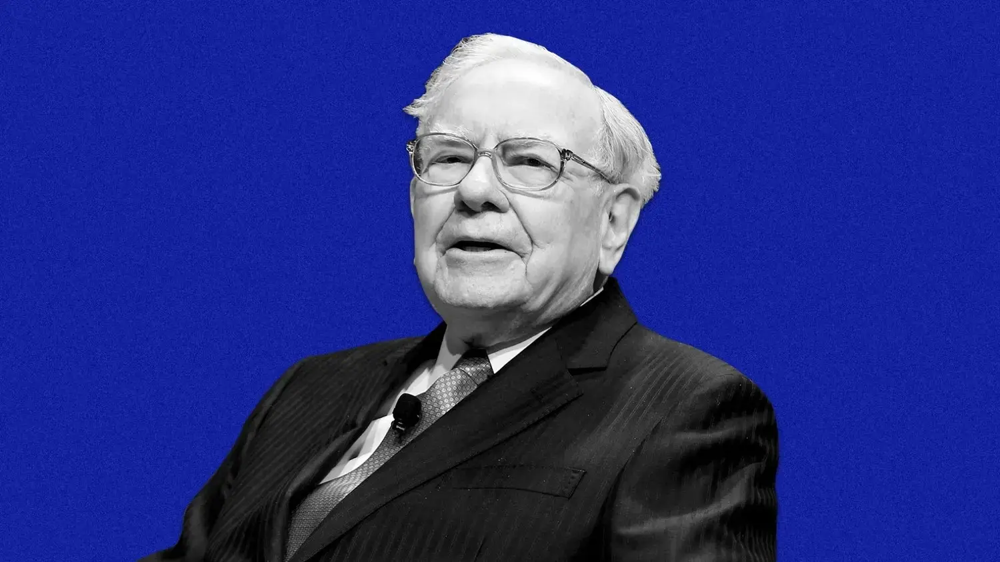

Dow Falls Nearly 800 Points as Iran War Fears Drive Oil to a 19-Month High



The numbers told the story plainly enough. The Dow Jones Industrial Average closed down roughly 785 points, or 1.6%, after briefly shedding more than 1,100 points at its worst point in the afternoon. The S&P 500 gave up 0.6% — just enough to drag its year-to-date performance into negative territory and erase a narrow gain that had taken weeks to build. The Nasdaq Composite fell approximately 0.3%. Across the Atlantic, France's CAC 40 sank 1.5% and Germany's DAX dropped 1.6%. The same anxiety rattling New York moved through European trading floors with equal force, and Asian markets were still trying to shake off significant losses from the session before.
What set Thursday apart from the ordinary down days that every market goes through was the sheer scale of the oil move. Benchmark U.S. crude jumped 8.5% in a single session, closing at $81.01 a barrel — its biggest one-day gain since May 2020. Brent crude, the globally referenced standard, added roughly 5% to settle near $85.41 per barrel. Those moves also added up to crude's biggest weekly gain since March of last year. None of it was happening in a vacuum. Every dollar tacked onto the price of oil traced back to one very narrow stretch of water sitting off Iran's coastline.
The Strait of Hormuz is just 21 miles wide at its narrowest point, but roughly one-fifth of the planet's daily oil supply passes through it. On Wednesday, according to data from S&P Global Commodities at Sea, not a single oil tanker made that passage. Insurers and shippers had already begun pulling out of the region as tensions escalated, and the result was a brief but complete freeze of tanker traffic that sent a clear message to energy markets worldwide. For American drivers, the consequences were already showing up at the pump — the national average price of regular gasoline climbed to $3.25 per gallon, up nearly 9% from just a week earlier. Analysts warned that if crude pushes past $100 and stays there for any length of time, the pressure on the global economy could get considerably more serious.
"Eight of the S&P 500's eleven sectors closed in the red, with investors abandoning economically sensitive stocks and rotating into the dollar and U.S. Treasuries as the conflict's market implications came into focus."
The flight to safety was visible across asset classes. The U.S. dollar strengthened noticeably, and the 10-year Treasury yield climbed to 4.13% — its highest level in three weeks — as investors began pricing in the possibility that higher energy costs could rekindle inflation and complicate the Federal Reserve's plans to resume cutting interest rates. The Fed had already signaled earlier in 2026 that it was watching for the right conditions to move rates lower. Oil at $81 and still rising is not the backdrop that makes that decision easier. Sustained energy cost increases filter into consumer prices, business operating expenses, and transport costs — exactly the kind of broad inflation pressure the central bank was hoping it had largely left behind.
Airlines and Industrials Took the Hardest Blow
Eight of the S&P 500's eleven sectors finished in the red on Thursday, but the damage was not distributed evenly across the board. Industrials, materials, and consumer staples each posted losses exceeding 2%, and stocks closely connected to broader economic activity fell sharpest. Caterpillar, which many traders use as a proxy for industrial demand worldwide, dropped more than 3%. The worst single-sector story of the day, though, belonged to airlines — a corner of the market that feels the pain of rising oil prices faster and more directly than almost any other industry.
American Airlines fell 5.4%. United Airlines dropped 5%. Delta Air Lines shed roughly 4%. A prominent exchange-traded fund that tracks airline equities slid 4.8%, its worst single session since April. The reasoning is straightforward and painful: jet fuel costs are directly tied to crude, Middle East flight routes get disrupted when conflict escalates in the region, and no airline executive can plan operating costs when the price of oil is jumping 8% in the span of an afternoon. Smaller companies across the broader market also struggled. The Russell 2000 index, which tracks small-cap stocks with more exposure to domestic borrowing costs, fell 1.9%.
One Bright Spot: Broadcom and the AI Chip Story
Not everything went down. In the technology sector — where the conversation has revolved around artificial intelligence spending and semiconductor demand for well over a year — Broadcom offered a meaningful counterweight to the day's bearish tone. The company reported quarterly results that came in ahead of analyst expectations on both revenue and earnings, with its AI chip division posting a 74% surge in revenue. That number was a direct reminder that the corporate spending cycle on AI infrastructure has not slowed in any material way, despite months of debate about whether the investment levels were sustainable. Broadcom shares jumped 4.8%, and the positive read-through helped stabilize other technology names that might otherwise have followed the broader market lower.
The divide between AI-exposed technology companies and the rest of the market has become one of the defining stories of 2026. Thursday illustrated it clearly. While airlines, industrials, and economically sensitive sectors absorbed the full weight of the geopolitical shock, chip makers and cloud infrastructure players moved to their own rhythm — one driven by enterprise spending decisions and earnings revisions rather than the price of a barrel of crude.
What the VIX Is Saying About Where Things Go Next
The CBOE Volatility Index — the VIX, widely called Wall Street's fear gauge — jumped 11% during Thursday's session. A move of that size matters. The VIX tracks the options market's expectation of near-term price swings in the S&P 500, and an 11% spike in a single day signals that traders are now pricing in considerably more uncertainty over the weeks ahead than they were 24 hours earlier. It does not point in a particular direction — only that whoever is pricing risk has concluded the range of possible outcomes has widened considerably.
Market strategists were broadly consistent in their view. If the conflict stays contained and oil pulls back, Thursday's session may prove to be the kind of geopolitical shock that buyers rush back into within days, once the immediate uncertainty fades. But if Strait of Hormuz traffic remains frozen for weeks rather than days, the picture changes significantly. Oil at $90 or $100 for an extended stretch rewrites the Federal Reserve's rate path, changes consumer spending patterns, and darkens the earnings outlook for a wide swath of corporate America. Investors ended the session keenly aware of that fork in the road, which is why the day had the tentative, unsettled quality it carried from open to close.
Friday's Jobs Report Adds Another Layer of Uncertainty
Layered on top of the geopolitical pressure is the economic calendar. The February nonfarm payrolls report — one of the most closely watched pieces of economic data the federal government publishes each month — was set to land Friday morning, arriving into a market already wound tight from the previous session. Economists had been projecting roughly 50,000 new jobs for February, with the unemployment rate expected to hold at 4.3%. Whether those numbers come in on target, beat expectations, or disappoint feeds directly into the Federal Reserve debate about the timing and pace of rate cuts. A strong reading gives the central bank more reason to hold rates in place; a weak one adds pressure to move sooner. Either way, investors were going to have to process a major economic data release on a morning when Iran war headlines were still competing for attention on every trading desk on the floor.
Reporting for this story drew on data and coverage from CNBC, AP News, and CNN Business.


Koepka’s Leap of Faith: What Comes Next After LIV Golf Exit
DECEMBER 24, 2025

Skenes and Skubal Win Cy Young Awards as Future Uncertainty Grows
NOVEMBER 12, 2025


Business

Dow Jones Reaches Historic 50,000 Milestone on Technology Strength
The Dow Jones Industrial Average crossed 50,000 for the first time in its 131-year history, propelled by strong gains in technology stocks, solid corporate earnings, and growing investor confidence about declining interest rates.
BUSINESS BY FEBRUARY 12, 2026

US Business PMI Hits 47-Month High in April 2026
The US manufacturing PMI rose to a 47-month high in April 2026, signaling a rebound in business activity despite ongoing inflationary pressures.
BUSINESS BY APRIL 24, 2026

Warren Buffett Says Age Is Catching Up but Reaffirms Confidence in Berkshire's Next CEO
Warren Buffett, now 95, told Berkshire Hathaway shareholders that Father Time is catching up with him as he prepares to step back from the CEO role, while reaffirming that Greg Abel is fully ready to take over.
BUSINESS BY NOVEMBER 11, 2025